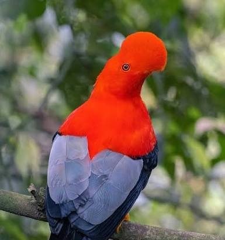
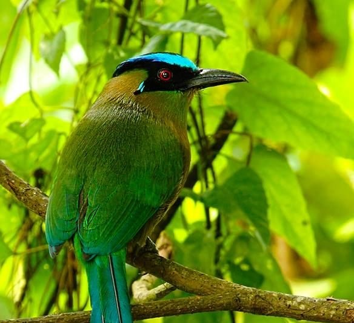
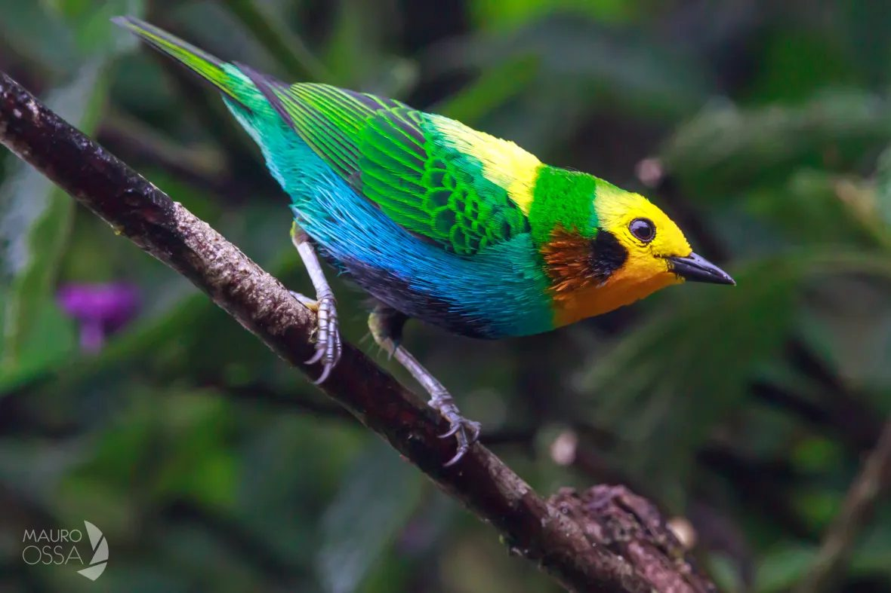
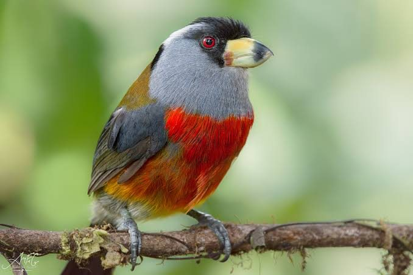
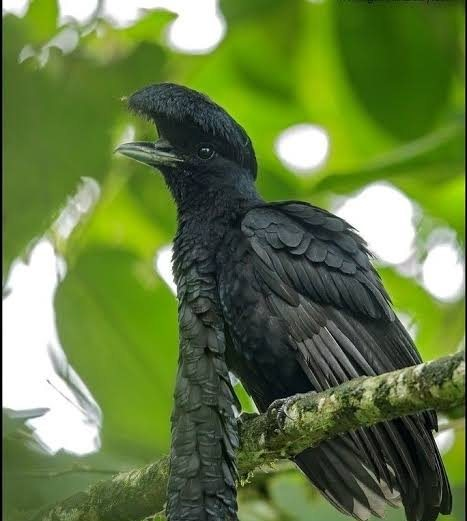
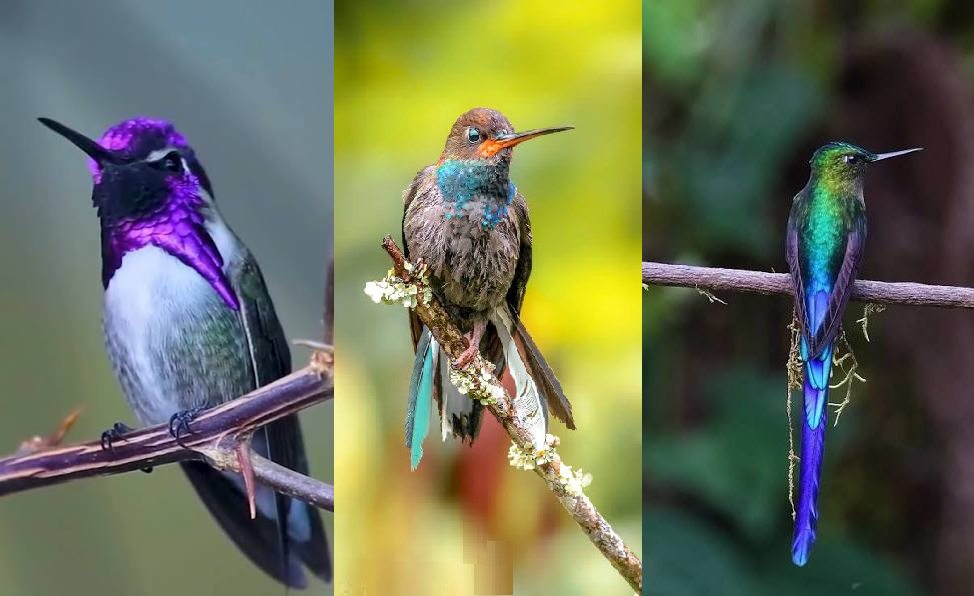
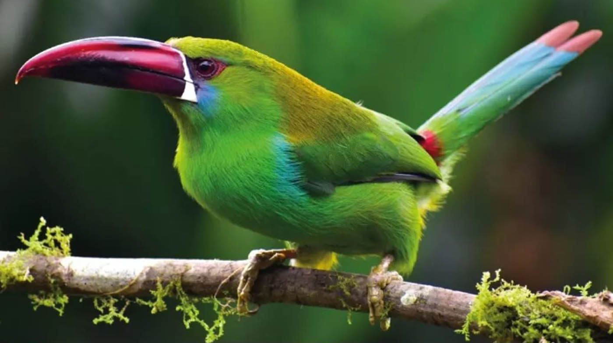
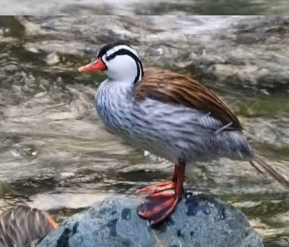

Gallito de roca
Gallito de roca andino (Rupicola peruvianus), reconocido por el plumaje naranja intenso del macho.
Descubre la diversidad de aves de los bosques andinos y del Chocó biogeográfico.
← Volver al inicioUna galería de las especies y grupos de aves que compartiste para este apartado.

Gallito de roca andino (Rupicola peruvianus), reconocido por el plumaje naranja intenso del macho.

Barranquero andino (Momotus aequatorialis), con cola larga y rasgos de color turquesa.

Trogón collarejo (Trogon collaris), ave de bosque húmedo con vientre rojo y una banda clara en el pecho. La fotografía es de Dominic Sherony y se comparte bajo licencia CC BY-SA 2.0.
Ver fotografía y licencia →
Tángara multicolor (Chlorochrysa nitidissima), especie endémica de Colombia.

Compás (Semnornis ramphastinus), ave característica de bosques húmedos del occidente andino.

Paragüero del Pacífico (Cephalopterus penduliger), especie de aspecto singular.

Pequeñas aves nectarívoras que aportan a la polinización de numerosas plantas.

Tucancito verde, ave de pico llamativo asociada a ambientes boscosos.

Pato de los torrentes (Merganetta armata), adaptado a ríos y quebradas de corriente rápida.